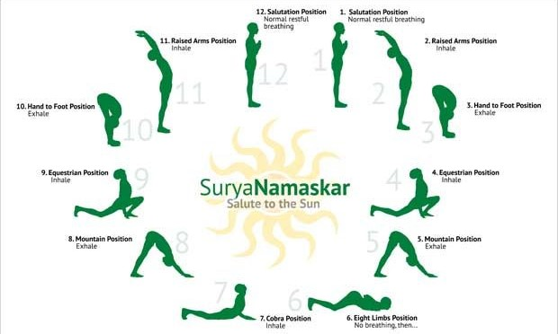
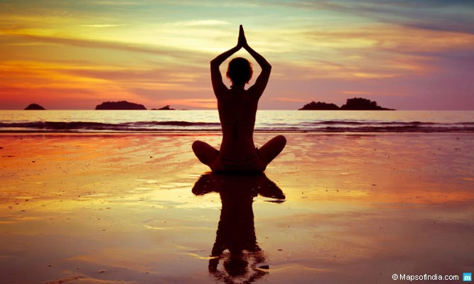
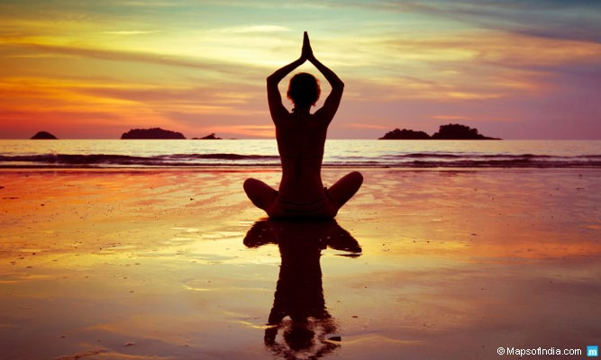

-

Stott Pilates
Стотт Пилатес је маркирана верзија Пилатес-ове методе физичког вежбања коју је Моира Мерритхев (рођена Стотт) развила и комерцијализовала Моира са супругом Линдсаи Мерритхев, почевши од 1988. Најзначајнија разлика између оригиналне методе Стотт Пилатес-а и Јосепха Пилатес-а. раних 1900-их је то што се Стотт фокусирао на неутрално држање кичме и створио другачији редослед вежби. 

-
Classic Pilates
Пилатес се развио у физичкој култури вежбања крајем 19. века како би ублажио лоше здравље. Међутим, постоје само ограничени докази који подржавају употребу пилатеса за ублажавање ствари попут болова у доњем делу леђа. Докази из студија показују да, иако Пилатес побољшава равнотежу, није доказано да је ефикасан третман за било које друго здравствено стање осим доказа да редовни пилатесови сесији могу да помогну кондиционирање мишића код здравих одраслих, у поређењу са вежбањем.
-
Reformer Pilates
Pilates je metoda vežbanja koju je osmislio Joseph Pilates. Sama ideja o reformeru nastala je za vreme I svetskog rata kada je J.Pilates na bolničke krevete konstuisao manje opruge, federe i trake pomoću kojih su se ranjenici koji su tada bili vezani za bolničke krevete brže oporavljali od onih koji su samo mirovali. Prednost vežbanja na reformeru je u simetriji, odnosno jednakom opterećenju leve i desne strane prilikom vežbanja. Kod većine ljudi statika tela je nejednako razvijena i asimetrična, a sama podela na levoruke i desnoruke podrazumeva da je jedna strana tela više razvijena od druge. Redovnim vežbanjem dolazi do većeg stepena simetrije, odnosno jačanja inače slabije strane tela. Reformer pilates je izmedju ostalog nastao da bi se pokreti koji se izvode na podlozi (Mat pilates) uprostili, kako bi osoba ojačala i da bi onda pilates na podlozi bio efikasniji. Specifičnost rada na reformeru i pilates spravama uopšte je što su treninzi individualni ili su formirane male grupe, gde trener može da se posveti svakom članu. Na taj način trener koriguje i prati vežbača pa je napredak vrlo brz, a mogućnost povrede smanjen na minimum.